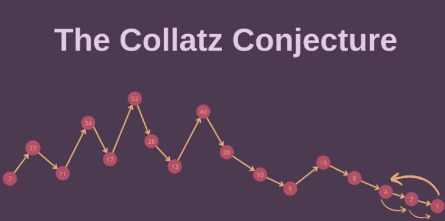
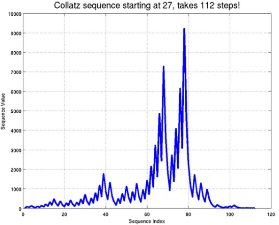

Have you ever heard of unsolved mathematical problems that have stumped even the brightest minds? Well, let me introduce you to one of the most basic math problems that no one has “yet” solved. The problem is all about numbers that go up and down before eventually reaching one. It may sound simple at first, but don’t take the bait!
How It Works
I want you to pick a number you want, I chose 7. If the number is odd, we multiply by three and add one. In that case; 7 x 3 = 21, 21 + 1 = 22. If the number is even, we divide by two. So, 22 / 2 = 11. Now, keep applying these two rules. As a result, the following graphical representation emerges:
Figure 1
As you may have noticed, after several more steps, we find ourselves back at the number 4. From here, the sequence enters a loop, endlessly cycling between 4, 2, and 1. What’s truly captivating is that regardless of the initial starting point, we eventually find ourselves trapped within the enchanting loop of 4, 2, and 1. For instance, for n=5, it will follow the sequence: 5, 16, 8, 4, 2, 1, 4, 2, 1. Similarly, for n=11, it will follow the sequence: 11, 34, 17, 52, 26, 13, 40, 20, 10, 5, 16, 8, 4, 2, 1, 4, 2, 1. It’s as if the sequence, with its twists and turns, eventually succumbs to this repetitive cycle. The question that arises is why? Why does this particular loop become an inevitable destination, regardless of the number we begin with? This enigma lies at the heart of the Collatz Conjecture. It was named after German mathematician, Lothar Collatz. We’ll take a closer look at his life in a moment.
Alongside its primary title, it is also referred to as the 3n+1 Conjecture, Syracuse Problem, Thwaites’ Sequence Problem, Ulam’s Problem, Kakutani’s Problem, and more. Each name reflects the efforts and opinions of several mathematicians who have worked on this unsolvable problem.
Who is Lothar Collatz?
He was born on July 6, 1910, in Arnsberg, Westphalia. His journey in mathematics began with a thirst for knowledge and a desire to solve its secrets. He pursued his studies at various reputable universities in Germany, including the University of Berlin, where he studied under the tutelage of Alfred Klose. In 1935, Collatz obtained his doctorate with a pioneering dissertation titled “Das Differenzenverfahren mit höherer Approximation fur lineare Differentialgleichungen” (The finite difference method with higher approximation for linear differential equations).
He made important contributions to mathematics throughout his distinguished career which left an everlasting mark on the field. Some of his most notable works are the Collatz-Wielandt Formula, the 3n+1 Conjecture and Funktionalanalysis und Numerische Mathematik (Functional Analysis and Numerical Mathematics).
There is no doubt that his talent as a mathematician has strengthened his position as one of mathematics’ prominent figures. His legacy is a testament to the altering abilities of the human brain and the limitless possibilities that mathematics offers.
Is It Possible to Solve the Collatz Conjecture?
Now that we know more about Collatz, we may continue to talk about the problem. Is the 3n+1 problem really solvable? Unless you generate a proof for every positive integer “n” that covers all numbers indefinitely, this assumption cannot be turned into a theorem! Several attempts have been made with graphical examples to verify this assumption. The ultimate goal was to create a suitable model instead of considering all starting numbers sequentially. However, the challenge lies in the presence of both order and randomness. It is certainly not random, yet it cannot be expressed as a definite pattern.
The number 27 takes the longest path to reach the number 1 among the first 50 numbers, requiring a total of 112 steps. As seen in the diagram below, it reaches a height of 7288 at the 67th step, and 9232 at the 77th step, but then undergoes a sudden descent and eventually returns to the number 1 after a few oscillations.
There are a few records among these numbers as well. As an example, if we start with the number 703, the sequence goes through 170 stages before peaking at 250,504. Another record-holder is 26,623, which ascends 10,358,020 steps overall and reaches its peak. However, after reaching the peak, their inevitable fate is to return to the number 1.
So, does that mean it is unsolvable? The prolific mathematician, Paul Erdős, in speaking of the Collatz Conjecture, once said, “Mathematics is not ready for such problems.” Despite this word of warning, mathematicians have been working on finding a solution to this issue for many years. (Perhaps you are one of them?) As a result, The Collatz problem remains unsolved. Furthermore, it’s also probable that we won’t ever be able to prove the veracity or falsity of this assumption.
References
“Lothar Collatz - Wikipedia”, June, 2023. [Online]
Available: https://en.wikipedia.org/wiki/Lothar_Collatz. [Accessed: 5 July 2023]
“3n+1 Diğer Adıyla Collatz Problemi: Kimsenin Çözemeyeceği En Basit Matematik Problemi”, January, 2023.[Online]
Available: https://www.matematiksel.org/dolu-tanesi-sayisi-diger-adiyla-collatz-problemi/. [Accessed: 5 July 2023]
“The Collatz Conjecture”, August, 2013. [Online]
Available: https://blogs.ams.org/mathgradblog/2013/08/01/collatz-conjecture/. [Accessed: 5 July 2023]
Veritasium, “The Simplest Math Problem No One Can Solve - Collatz Conjecture”, July, 2021. [Online Video]
Available: https://www.youtube.com/watch?v=094y1Z2wpJg. [Accessed: 4 July 2023]